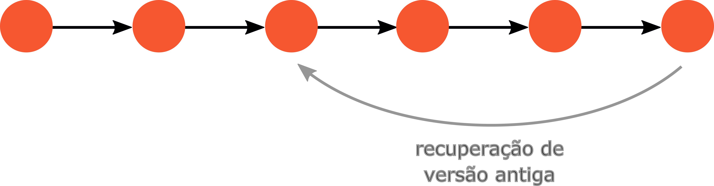
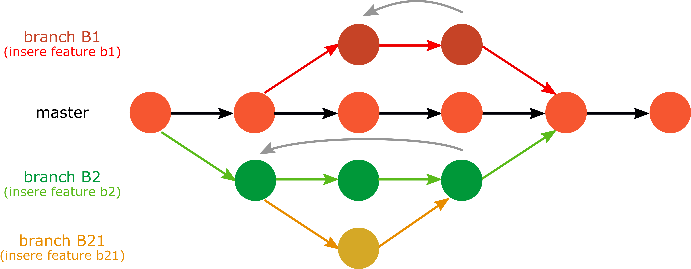

Controle de versão¶
Objetivos¶
Entender o que um Sistema de Controle Versões (SCV) e o versionamento de código
Compreender benefícios de SCVs para arquivos diversos (reprodutibilidade, auditabilidade, compartilhamento, entre outros)
Ter uma visão geral sobre os SCVs mais comuns
Entender o funcionamento do SCV git, bem como o workflow stage- commit- push.
Compreender comandos básicos para criação e gerenciamento de repositórios locais e remotos
Introdução¶
Controle de versão é a abordagem sistemática para registrar alterações realizadas em um arquivo ou conjunto de arquivos ao longo do tempo.
Daremos uma visão geral sobre sistemas de controle de versão (SCVs), do inglês control version systems;
Meios eficientes de gerir arquivos em repositórios remotos;
Noções de Git.
Benefícios de um SCV¶
Reprodutibilidade
Auditabilidade
Historicidade
Sincronia
Compartilhamento
Exemplos de SCVs¶
Podem ser baseados em interface gráfica ou em linha de comando. Exemplos:
Google Drive: suíte de soluções bem conhecida;
Dropbox: repositório de arquivos com versionamento automático;
Overleaf: ferramenta para escrever artigos científicos com sistema embutido de versão;
HackMD: ferramenta colaborativa para documentação.
Bazaar
Git
Mercurial
Subversion
SVN
Neste curso, aprenderemos sobre o Git. O Git surgiu em 2005 para ser um sistema SCV:
rápido;
eficiente;
com suporte ao desenvolvimento não-linear (multibranching);
completamente distribuído e
capaz de manipular grandes projetos.
Processo de versionamento¶
O workflow de um SCV ocorre, em geral, nas seguintes etapas básicas:
Criar arquivos
Manipular arquivos (alterar, deletar, adicionar)
Atribuir o estado (status) dos arquivos
A atribuição do status é o que se define por versão em um determinado tempo.
Nos SCVs populares, versão é também chamada de checkpoint, commit ou time-point.
Para o Git, o commit é a submissão de uma modificação de arquivo (nova versão de si).
Masters e branches¶
O desenvolvimento de códigos pode ser ilustrado como uma planta (caule + ramos).
Caule (master): “linha-mestra” do código;
Ramos (branches): são as melhorias (features) que incorporamos ao código com o tempo.
A ideia de uma ou mais branches é permitir que um programador trabalhe em múltiplas features ao mesmo tempo e decida, posteriormente, se as branches poderão ser fundidas na master ou não.
Este processo é conhecido como “fusão” (merge).
A master, por si, é chamada de master branch => desenvolvimento linear.
Quando branches adicionais coexistem => desenvolvimento não-linear.
Master branch¶
Branches¶
Usando o git¶
Para começar, apontemos uma sutil diferença:
Git: é um SCV para gerenciar o histórico de códigos-fonte.
GitHub: serviço de hospedagem para repositórios Git.
Enquanto outros SCVs lidam com as “mudanças” feitas em cada arquivo ao longo do tempo, o Git trata-os como um conjunto de imagens de um sistema de arquivos em miniatura.
Toda vez que alteramos versões (commit), o Git basicamente “tira uma foto de todos os arquivos e armazena uma referência para esse conjunto de arquivos”.
Para ser eficiente, se os arquivos não são alterados, o Git não armazena o arquivo novamente, mas um link para o arquivo idêntico anterior já armazenado. Então, o Git lida com fluxo de estado dos arquivos.

Fluxo dos arquivos no tempo para um SCV usual e para o Git.

Armazenamento de arquivos como snapshots (estado dos arquivos”). Fonte: Pro Git Book.
Estados de arquivos¶
Um repositório git pode ser criado por inicialização em um diretório ou por clonagem de um repositório existente.
O processo geral do Git é baseado em três etapas: Alterar > Preparar > Enviar.
Em um diretório local, arquivos são criados, modificados, então admitidos a uma área de preparação (stage area) e, posteriormente, enviados (commit) a um estado de “nova versão”.
Para submetê-los a um repositório remoto, “empurramos” (push) os arquivos para sincronizá-los com o repositório local.
Comandos básicos¶
Para inicializar um novo repositório:
git init
Para adicionar arquivos à área de preparação:
git add
Para enviar arquivos à nova versão:
git commit
Para saber o estado dos arquivos:
git status
Para gerar o histórico de mudanças:
git log
Quadro de estado de arquivos e comandos do Git.
Boas práticas do commit¶
Escrever mensagem:
git commit -m "Modificação realizada"
Configurar editor preferido
git config --global core.editor "editor_preferido"
As mensagens de um commit devem seguir algumas diretrizes:
Dar significado: escreva mensagens objetivas, diretas e significativas.
Resumir as alterações: um modelo sugerido é:
1a. linha: escreva um título com até 50 caracteres.
2a. linha: espaçamento.
3a. linha em diante: corpo da mensagem contendo o detalhamento das alterações.
Usar o tempo verbal no presente: em geral, usamos o tempo verbal no indicativo ou no imperativo, ou mesmo gerúndio para especificar o título de um commit. Por exemplo:
Fazendo algo… (Doing, adding, including this…)
Faz algo… (Do, add, include this…)
Especificar arquivos: use
git add arq1 arq2 ...para especificar os arquivos específicos relacionados ao commit.
Em Python, podemos usar len(‘titulo’) para contar se os o objeto str ‘titulo’ possui 50 caracteres ou menos.
Exemplificamos abaixo dois tipos de mensagens que podem acompanhar um commit:
Mensagem inadequada
"Estou alterando o sinal de + para -."
Mensagem adequada
"Corrige operação aritmética.
Corrige símbolo de adição ('+') para subtração ('-')
na expressão 'a + b' da fórmula utilizada no cálculo do XLMX."
Em inglês, uma mensagem equivalente seria:
"Fix arithmetic operator.
Replaces symbol '+' with '-' at the expression 'a + b' in the formula to compute the XLMX.
Para ignorar arquivos de serem rastreados, criamos um arquivo chamado
.gitignoree neles acrescentamos todos os demais que não devem ser rastreados.
Por exemplo, as instruções abaixo servem para criar o arquivo
.gitignoree adicionar o arquivo ignore.txt para não ser rastreável.
touch .gitignore; echo "ignore.txt" > .gitignore; cat .gitignore
Recuperação e comparação¶
Para criar um novo commit que reverte as mudanças feitas na última versão a um estado anterior:
git revert HEAD
A partir do histórico de mudanças obtido por
git log, podemos reverter o projeto inteiro para uma versão anterior especificando o SHA do projeto:
git checkout SHA
No caso de recuperar a versão anterior de um único arquivo, especificamos o arquivo com:
git checkout SHA -- file
[SHA] (Secure Hash Algorithm) é um conjunto de algoritmos desenvolvidos pelo americano National Institute of Standards and Technology (NIST) para encriptar arquivos e atribuir-lhes uma identidade para finalidades de verificação. SHA é um tipo de CHF (cryptographic hash function).
Exemplo: 2 commits realizados em um projeto.
O ponteiro (HEAD) mostra que o commit com SHA
553ae56fb180ff630ba4026cbc1deb212e4efd42é o estado mais atual do projeto.Para retornar o projeto ao estado imediatamente anterior, podemos fazer
git checkout 431d0e589e7366dc21d0e18144f72b67d6b4a148.
commit 553ae56fb180ff630ba4026cbc1deb212e4efd42 (HEAD -> master)
Author: Gustavo Oliveira <gustavo.oliveira@ci.ufpb.br>
Date: Tue Mar 16 16:06:50 2021 -0300
Fix ex5. Required to modify convertInputUnits to see pressure.
commit 431d0e589e7366dc21d0e18144f72b67d6b4a148
Author: Gustavo Oliveira <gustavo.oliveira@ci.ufpb.br>
Date: Tue Mar 16 14:24:03 2021 -0300
ex5 removed files.
Para comparar duas versões de arquivo podemos usar
git diff
Entender o que está sendo comparado - observar as indicações - Comparar somente arquivos relevantes
Trabalhando com branches¶
Branches são abertas para incorporar novos elementos, funcionalidades ou componentes em um projeto de maneira a não interferir no tronco do projeto, que deve permanecer estável ao longo do tempo.
São também usadas para evitar rupturas acidentais que danifiquem a operação normal das componentes de projeto.
Para criar uma nova branch, usamos:
git checkout -b nome_da_branch
Para navegar entre as branches:
git checkout nome_da_branch
Para listar todas as branches existentes:
git branch
Para deletar completamente uma branch:
git branch -D nome_da_branch
Fusão¶
Para integrar as modificações propostas em uma branch na branch master realizamos uma espécie de “fusão”.
Por exemplo, para fundir uma branch de origem, digamos branch_A, em outra de destino, digamos branch_B, primeiro devemos levar o ponteiro para a origem branch_A com:
git checkout branch_A
Em seguida, a fundimos na branch_B com:
git merge branch_B
Conflitos¶
Se, por exemplo, um mesmo arquivo for alterado na branch_A, mas não na branch_B, ao tentar fundi-las, uma incompatibilidade existirá, de maneira que um erro por conflito de versões será produzido.
Para corrigir incompatibilidades, as partes modificadas do arquivo devem ser equalizadas ou substituídas por um novo arquivo. Em seguida, um novo commit deve ser submetido. Eventualmente, para descatar uma fusão, usamos:
git merge --abort
Ferramentas para resolver conflitos¶
Algumas ferramentas que ajudam a resolver conflitos gerados por merge estão disponíveis no mercado, tais como
Para definir a ferramenta padrão para fusão, fazemos:
git config --global merge.tool name_of_the_tool
e a lançamos com:
git mergetool
Boas práticas¶
Para trabalhar efetivamente com branches, algumas boas práticas recomendadas são:
Manter a master limpa;
Adicionar apenas uma nova feature por branch;
Usar nomes razoáveis para as branches.
Integração com repositórios¶
Repositórios remotos são hoje amplamente utilizados como meios de hospedagem e compartilhamento de código, entre os quais estão o GitHub, GitLab e o Bitbucket. Todavia, é possível que qualquer um crie seu próprio repositório em um servidor web (veja, por exemplo, este link).
A seguir, damos exemplos de como utilizar o GitHub. Para realizar a comunicação entre um repositório local com seu homólogo remoto, ou vice-versa.
Para clonar um repositório remoto localmente, o comando se parece com:
git clone https://github.com/user/repo.git
onde user é o nome do usuário no GitHub e repo é o nome do repositório.
Para atualizar um repositório local tomando como base um remoto:
git pull
Neste caso, é necessário que o histórico de modificações também seja compatível entre ambos.
Para submeter versões após um commit para o repositório remoto, utilizamos
git push
No jargão da computação, repo é uma redução de repositório.
Vinculando o repositório local com o remoto¶
Para que tenhamos um repositório local em sincronia com um remoto, podemos realizar os seguintes passos:
Inicialização e versionamento
cd icd
git init
git add .
git commit
Acima, icd é o diretório onde o projeto está localizado em nosso disco local. Em seguida, inicializamos o rastreamento, adicionamos todos os arquivos contidos no diretório e atribuímos a versão.
Vinculação remota
Nesta etapa, fazemos a vinculação com o repositório remoto no GitHub e “empurramos” os arquivos para lá:
git remote add origin https://github.com/user/repo.git
git push - u origin master
Atualização local
Caso alteremos os arquivos diretamente no GitHub, podemos atualizar o repositório local com:
git pull
Pull requests¶
Caso queiramos contribuir com um projeto cuja propriedade seja de outro usuário, podemos requisitar acesso a ele no GitHub com pull requests.
Suponhamos que 3 desenvolvedores atuam em um projeto em 3 branches distintas. Se um deles fizer uma modificação e submetê-la à branch master sem que os outros 2 acompanhem em tempo real, ambos podem atualizar suas branches com
git pull origin master
Forks¶
Um fork é o ato de aforquilhar (“prender com forquilha ou garfo”) um projeto, no sentido de copiar o repositório de um usuário no GitHub para você. O repositório original “forkado” é chamado de upstream.
Para trabalhar com a sua cópia “forkada”, siga os seguintes passos:
Clone o repo aforquilhado localmente:
git clone git@github.com/seu_user/forked_repo.git
Adicione o upstream à sua lista de repositórios remotos para receber as mudanças submetidas no repo original:
git remote add upstream https://github.com/upstream_user/original_repo.git
Verifique se ele foi, de fato adicionado:
git remote -v
Atualize o repo aforquilhado trazendo do original as mudanças e commits mais recentes, bem como todas as branches (fazer uma “juntada”):
git fetch upstream
Liste todas as branches, incluindo as do upstream:
git branch -va
Direcione o ponteiro para a sua master branch:
git checkout master
Tutorial interativo do Git¶
Descrever em palavras o que os comandos git realizam concretamente pode ser um pouco impreciso. A ferramenta Learn Git Branching foi criada com o propósito de ensinar o git por meio de tutoriais interativos. Com ela, você pode praticar e entender comandos e simular o comportamento de um repositório real.
Controle de versão para dados¶
Ferramentas para que lidam com controle de versão de grandes arquivos passaram a ser desenvolvidas.
Elas permitem que grandes dados sejam adicionados a repositórios e tenham seus estados controlados.
Algumas dessas ferramentas são:
Exemplos de ferramentas de cloud computing para gestão de grandes arquivos e controle de dados são:
Exercícios¶
Criar repositório para o curso e organizá-lo como um projeto.
Praticar comandos do git na sandbox do Learn Git Branching.